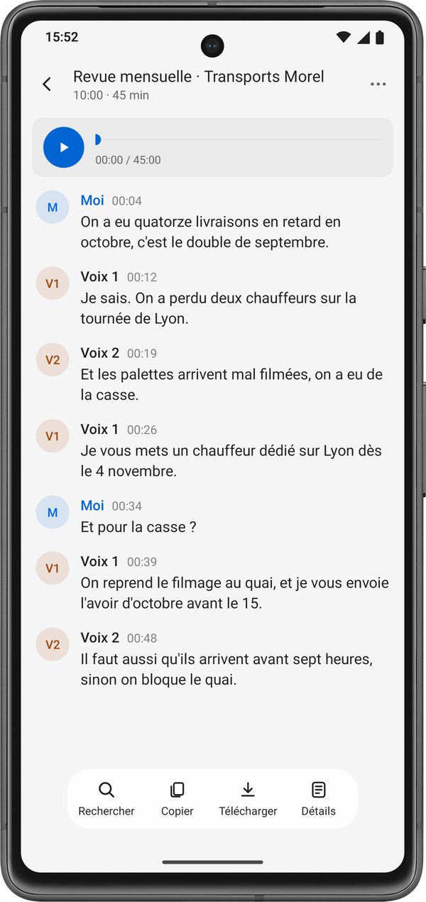
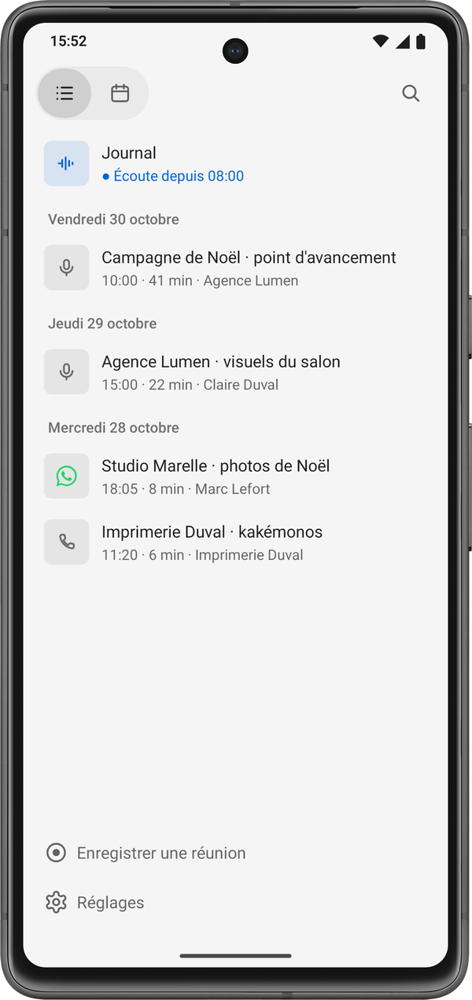
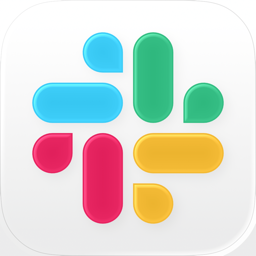
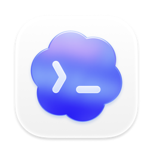
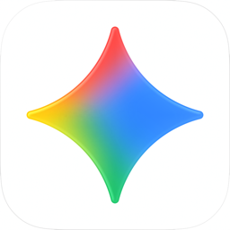

Souvenez-vous de tout
Vos conversations mémorisées, transcrites sur votre Mac sans y penser et accessibles à vos agents IA.




 5 appels lus : la revue budgétaire et 4 appels avec les banques
5 appels lus : la revue budgétaire et 4 appels avec les banquesDeux banques sur trois renouvellent, mais pas aux mêmes conditions :
- « On renouvelle, mais avec un covenant sur la dette nette. » Banque Aurore, 28 oct.
- « On peut monter à trois millions si vous nous donnez vos prévisions de trésorerie. » Banque Ferrand, 23 oct.
- « Le comité ne se réunit pas avant décembre. » Caisse Régionale Sud, 21 oct.
En revue budgétaire, vous avez dit « rien d’inquiétant » : c’est vrai pour deux banques, pas pour la Caisse Régionale. À dire à Sophie avant le conseil.
1 réunion lue : revue mensuelle avec Transports Morel, 29 oct.Trois engagements, le premier dès mercredi :
- « Je vous mets un chauffeur dédié sur Lyon dès le 4 novembre. » les retards
- « Je vous envoie l’avoir d’octobre avant le 15. » la casse
- « Sept heures, c’est noté, je le mets dans le contrat. » l’arrivée au quai
Le filmage des palettes au quai n’a pas de date. Je peux préparer un mail qui confirme les quatre points.
5 notes vocales lues, du 27 au 30 oct.- Relancer l’agence pour les visuels du salon, avant mercredi
- Vérifier le budget LinkedIn : 80 % du trimestre déjà dépensés
- Noël : le prénom dans l’objet du mail
- Webinaire de jeudi : les chiffres de l’étude en premier
- Réserver le resto pour l’anniversaire de Léa, samedi
Je peux ajouter les deux premières à vos rappels.
macOS 15 ou plus récent · Mac M1 ou plus récent
Enregistre ce qui se dit sur

et s’en souvient pour




Vos appels s’ajoutent à votre mémoire
Votre agent la consulte quand vous lui posez une question.
Une seule installation
Une ligne à copier, deux autorisations, plus celle de l’écran si vous voulez les captures. Ensuite, Callrecorder démarre avec votre Mac.

Une mémoire qui se constitue toute seule
Zoom, Teams, Meet, FaceTime, WhatsApp : chaque appel est enregistré dès qu’il commence, et transcrit dès qu’il se termine.

Les réunions autour d’une table
Un rendez-vous dans une salle, sans visio : posez le Mac sur la table et cliquez sur Enregistrer une réunion. La réunion s’ajoute à votre mémoire comme un appel.

Vos téléphones
Les appels de l’iPhone, pris sur le Mac, s’ajoutent à votre mémoire, sans rien installer sur l’iPhone. Sur Android, l’app Callrecorder enregistre vos appels et vos réunions, puis les envoie au Mac. En bêta.
Raccrochez : votre agent est déjà au courant
Demandez ce qui a été promis, décidé ou oublié : Claude, Codex et les autres agents consultent votre mémoire et vous répondent, avec l’appel et l’heure de chaque citation. Rien à copier-coller.

L’audio reste sur votre Mac
La transcription se fait sur place, sans compte ni serveur. L’audio ne quitte le Mac que si vous placez vos enregistrements dans Google Drive, iCloud Drive ou Dropbox.

Installation
macOS 15 ou plus récent · Mac M1 ou plus récent
Callrecorder s’installe sur un Mac. Envoyez-vous le lien pour l’ouvrir sur votre Mac.
Envoyer le lienLaquelle, sur ce Mac ?
L’app du Dock, pas le navigateur.
- Installe avec vous
- Relit chaque conversation
- Répond sur vos conversations
Un souci en route ? Collez le texte de l’erreur dans votre IA. Elle ne voit pas vos conversations ? Reliez-la dans Callrecorder, Réglages › Agents.
Dans le navigateur, Claude ou ChatGPT ne voient pas votre Mac : ils ne peuvent ni installer Callrecorder, ni lire vos conversations. Installez l’app de Claude sur le Mac, connectez-vous avec le même compte, puis choisissez Claude ci-dessus.
- CollerLa ligne dans le Terminal : ⌘ Espace, tapez « Terminal », puis Entrée.
- AutoriserCallrecorder s’ouvre et demande le micro, le son des apps, puis l’écran, facultatif : cliquez sur Autoriser quand macOS le demande. Pour l’écran, macOS demande aussi Touch ID ou votre mot de passe.
- LireLisez le texte affiché après le bip. Cette lecture devient votre premier enregistrement : il est dans Callrecorder, dans la barre des menus.
Rien ne part de votre Mac, aucune IA n’est reliée. À la fin, Réglages › Agents s’ouvre : vous y reliez la vôtre si vous le voulez. Des chiffres techniques aident à améliorer l’app : ils ne partent que si vous le cochez, dans Réglages › Général.